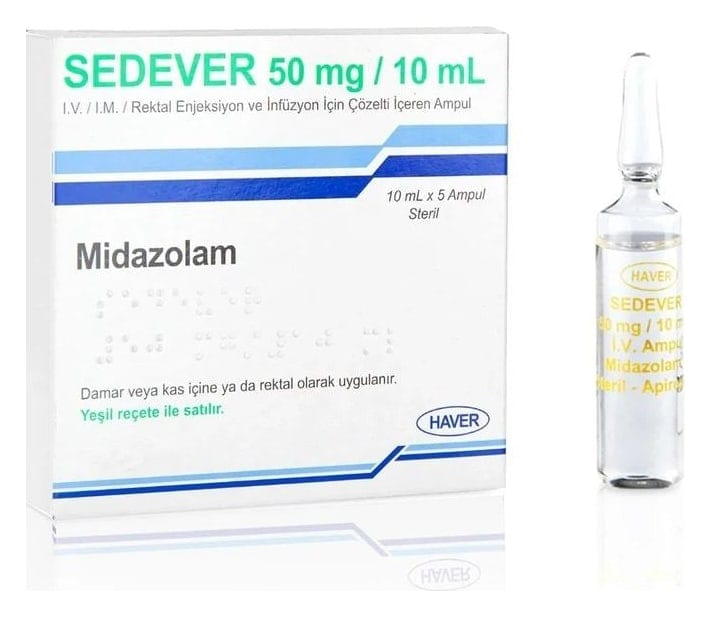

Sedever 50 mg/10 ml Rektal Uygulama Ve IV/IM Enjeksiyon Ve İnfüzyon İçin Çözelti

Ne için kullanılır
KT · Bölüm 1SEDEVER, imidazobenzodiazepin grubu bir benzodiazepindir. Uyku başlatmak (sakinleşme, uyuşukluk veya uykulu durumu) ve heyecan, kas kasılmaları ve spazmları azaltmak için kullanılan hızlı etkili bir ilaçtır. İlaç damar içine enjeksiyon (intravenöz), damla ile enjeksiyon (infüzyon), kas içine enjeksiyon (intramüsküler) veya rektal uygulama yolu ile uygulanır. SEDEVER etkin maddesi midazolam olan berrak, renksiz, partikül içermeyen steril bir çözeltidir. Her 10 mL çözelti içinde 50 mg (5 mg/mL) midazolam içerir. Her kutuda 5 adet 10 mL’lik şeffaf tip I otopul cam ampul bulunmaktadır. Bu ilaç, tetkikler ve tedavi sırasında yetişkinlerde ve çocuklarda uyutma ve uyuşturma için kullanılır. Müdahale öncesinde verilen ilaç olarak, tedavi öncesinde hastaları yatıştırmak ve yoğun bakım ünitesindeki hastaları uyutmak için kullanılır. Midazolam tek başına veya anestezide kullanılan diğer ilaçlarla beraber kullanılabilir.